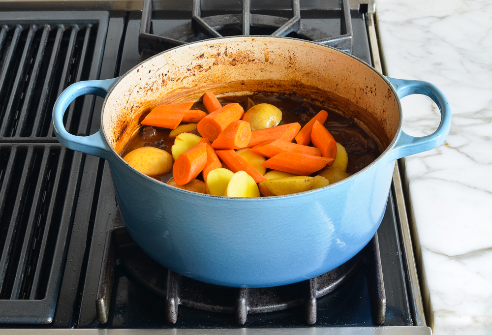

Beef Stew Recipe with Carrots & Potatoes
This classic French beef stew is the ultimate comfort food. Slow-cooked in a wine-based broth, the meat becomes meltingly tender and enveloped in a richly flavored sauce—perfect for chilly nights.
It’s incredibly delicious and the ultimate cold weather comfort food. Pieces of well-marbled beef are seared in a hot pan, then gently braised with garlic and onions in a rich wine-based broth. After a few hours, the meat becomes fork tender and enveloped in a deeply flavorful sauce.
This beef stew recipe is largely hands-off and even better when made a day or two ahead. It also freezes beautifully. Serve it with artisan bread or popovers to soak up the rich sauce, or ladle it over egg noodles, mashed potatoes, or creamy polenta for an extra-hearty meal.
WHAT YOU’LL NEED TO MAKE BEEF STEW
- BONELESS BEEF CHUCK: The key to tender, flavorful stew. Look for chuck roast with a good amount of marbling, or white veins of fat running through it. Avoid generic “stew meat,” especially if it looks lean.
- OLIVE OIL: Used for browning the beef and sautéing the vegetables.
- YELLOW ONIONS AND GARLIC: Adds sweetness, depth, and savory aroma to the stew as they cook.
- BALSAMIC VINEGAR: Adds acidity and depth, balancing the richness of the stew.
- TOMATO PASTE: Thickens the stew and imparts a rich tomato flavor.
- ALL-PURPOSE FLOUR: As the stew simmers, the flour helps thicken the broth, turning it into a rich, velvety sauce that clings to the meat and vegetables.
- DRY RED WINE: Adds bold flavor and forms the base of the stew along with the broth and water. Use any dry red wine like Pinot Noir, Merlot, or Cabernet Sauvignon that is inexpensive but good enough to drink.
- BEEF BROTH AND WATER: Forms the liquid base along with the wine.
- BAY LEAF AND DRIED THYME: Classic aromatics that infuse earthy flavors.
- CARROTS: Adds natural sweetness and texture.
- WHITE BOILING POTATOES (BABY YUKONS): These small potatoes soak up the rich broth and add heartiness.
- FRESH PARSLEY: A fresh garnish that brightens the stew.
STEP-BY-STEP INSTRUCTIONS
-
Begin by removing any large chunks of fat that are easy to get to (like the one my knife is pointing to below), but don’t overdo it with the trimming, as the fat helps make the beef tender.
-
Next, season the meat generously with salt and pepper.
-
Heat a bit of oil in a Dutch oven or large pot and brown the meat in batches.
-
This step is a bit time-consuming but browning the meat adds depth and dimension to the stew. (Note: it’s important not to crowd the pan—if you try to brown all the meat at once, it will steam instead of sear and you won’t get all that lovely color and flavor.)
-
Remove the meat and add the onions, garlic, and balsamic vinegar to the pan. The vinegar will loosen all the brown bits from the bottom of the pan and add flavor.
-
Cook until the vegetables are softened, then add the tomato paste and cook for a minute more.
-
Add the beef back into the pan and sprinkle with the flour.
-
Stir until the flour is dissolved.
-
Add the wine, broth, water, thyme, bay leaves, and sugar.
-
Bring to a boil, then cover and braise in the oven for 2 hours. (If you don’t have a Dutch oven or prefer to cook the stew on the stovetop, that works, too! The timing will be the same—just keep it on the lowest heat setting and stir occasionally to prevent sticking.)
-
After 2 hours, add the carrots and potatoes.

-
Return the stew to the oven and cook for one hour, until the meat and veggies are tender and the broth has thickened.
-
For a thicker sauce, mash 2 tablespoons each softened butter and flour into a paste. Bring the stew to a simmer on the stovetop, then stir in small amounts of the paste, letting it dissolve and thicken the sauce before adding more.
Want to make the stew in a crockpot? Sear the meat and cook the onions and garlic as instructed. Then transfer everything to the slow cooker with the carrots, potatoes, water, wine, and broth; cook for 4 to 5 hours.